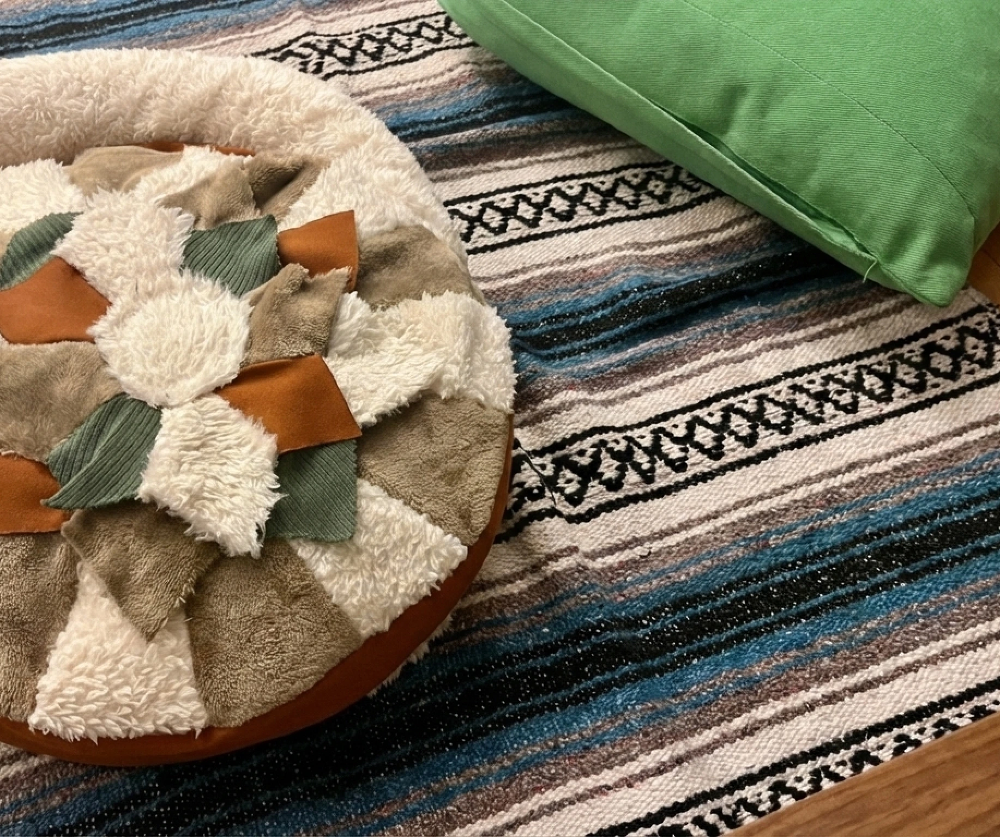
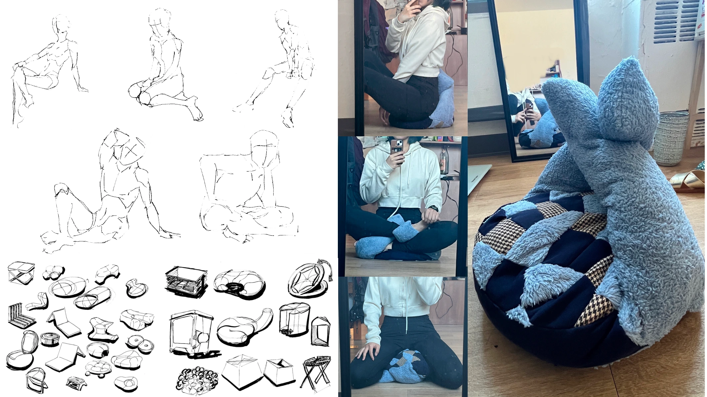
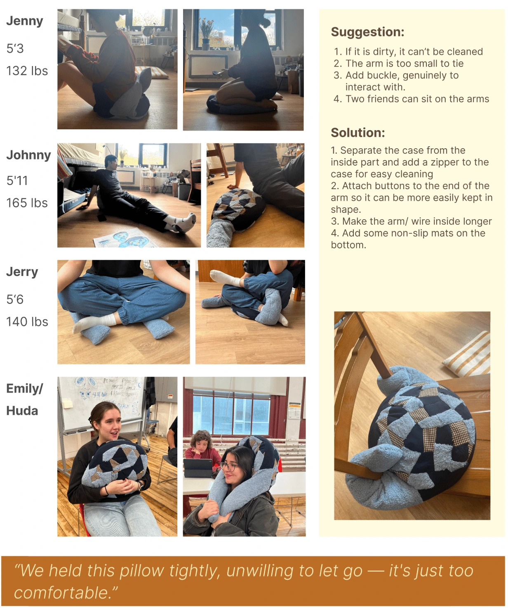
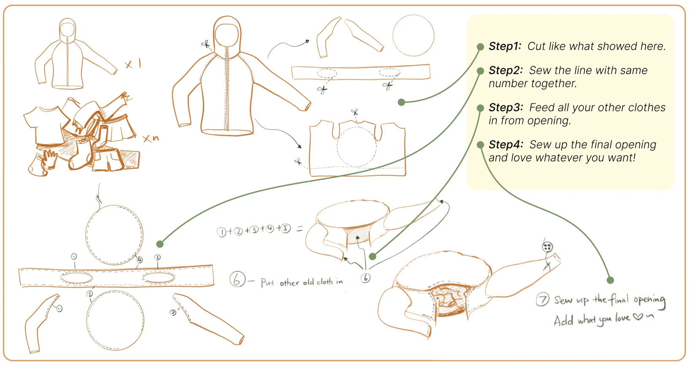
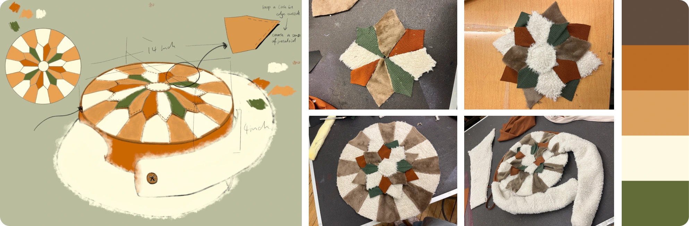
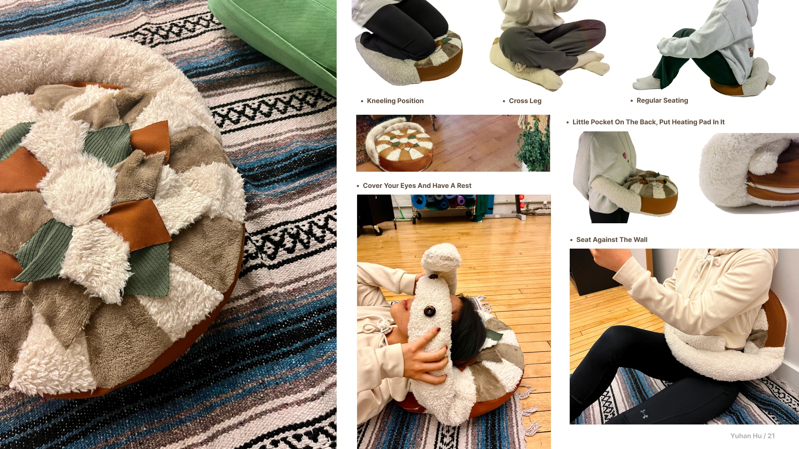

CozyNest
A floor seat that adapts to different postures and lets people make cushions from their own clothing.
View full process
Project Overview
This product supports various floor-sitting positions and encourages DIY customization, fostering emotional durability and a lasting personal connection.
Design Philosophy
Form
Lotus shape commonly used in Indian yoga, symbolizes inner purity, balance.
Function
Ergonomic design supporting healthy posture for various floor-sitting positions.
Sustainability
Encouraging people to DIY seat cushions using their own old clothes, fostering emotional durability.
Design Development
Concept Sketches & Ideation

Ergonomic Studies

Tutorial


Key Features
DIY & Emotional Durability
Encourages users to transform their own old, emotionally meaningful clothing into a cushion, extending emotional attachment and product lifespan.
Multi-Posture Support
Soft, adjustable hugging arms adapt to different sitting positions, offering flexible support for resting, lounging, or curling up.
Personalized Comfort
Customizable filling and form allow each cushion to reflect the user's body, habits, and memories, creating a sense of long-term companionship.
Supported Postures
CozyNest adapts to various sitting positions, offering flexible comfort for different activities and moods throughout your day.

Impact & Future Vision
CozyNest bridges the gap between comfort and sustainability, offering a personal sanctuary that grows with you. By fostering DIY customization and emotional connection, it challenges the disposable furniture culture and encourages long-term product relationships. Future iterations will explore modular designs and community-driven pattern sharing.